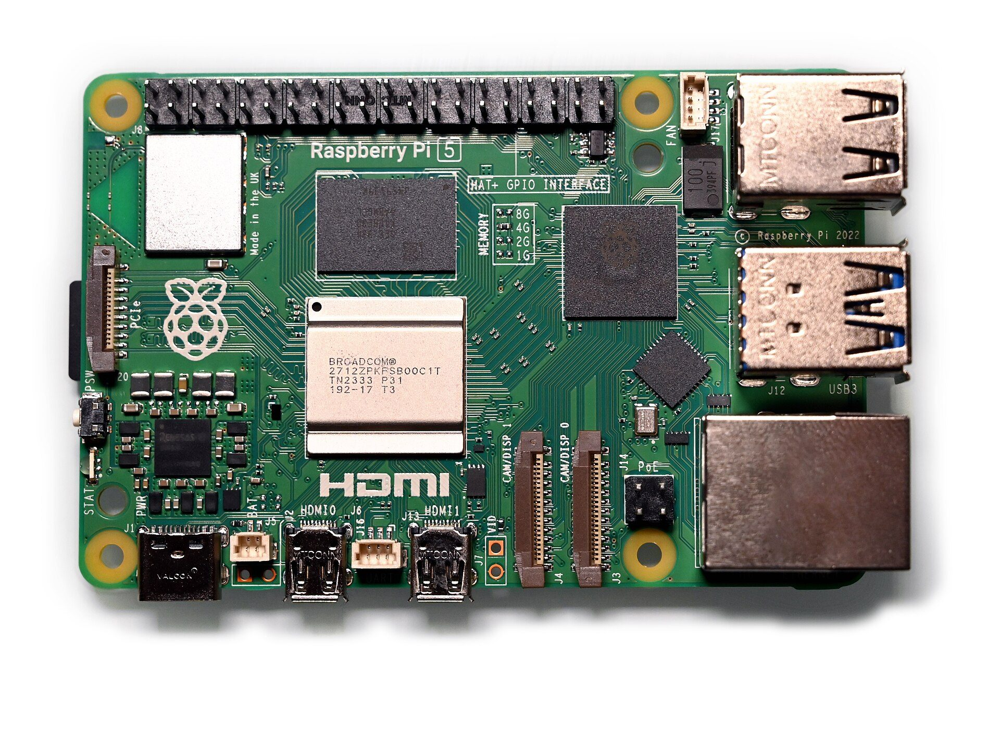
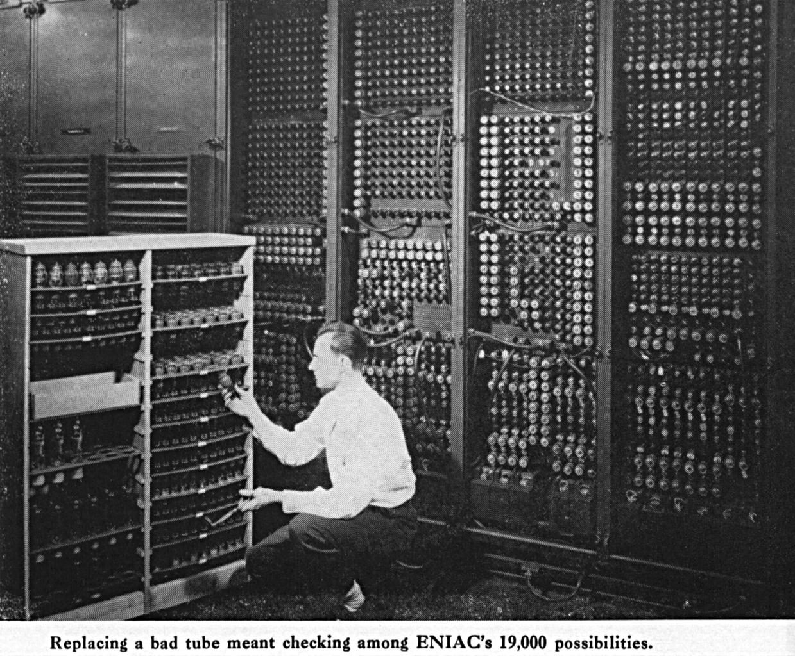
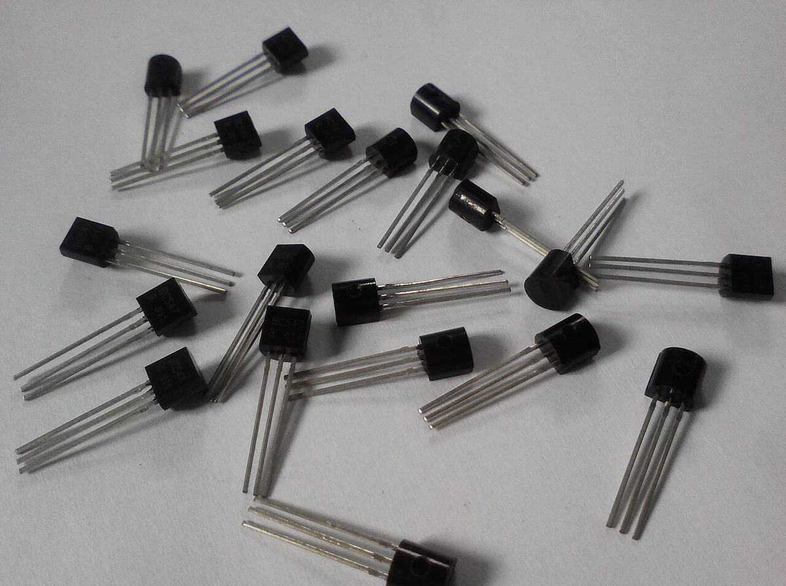
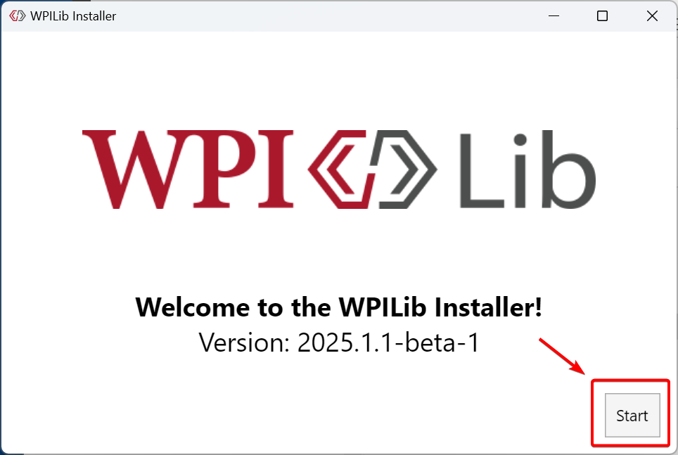
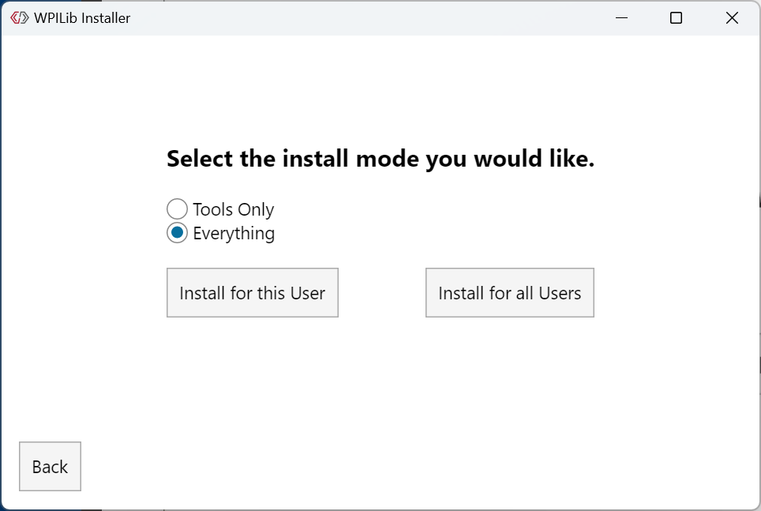
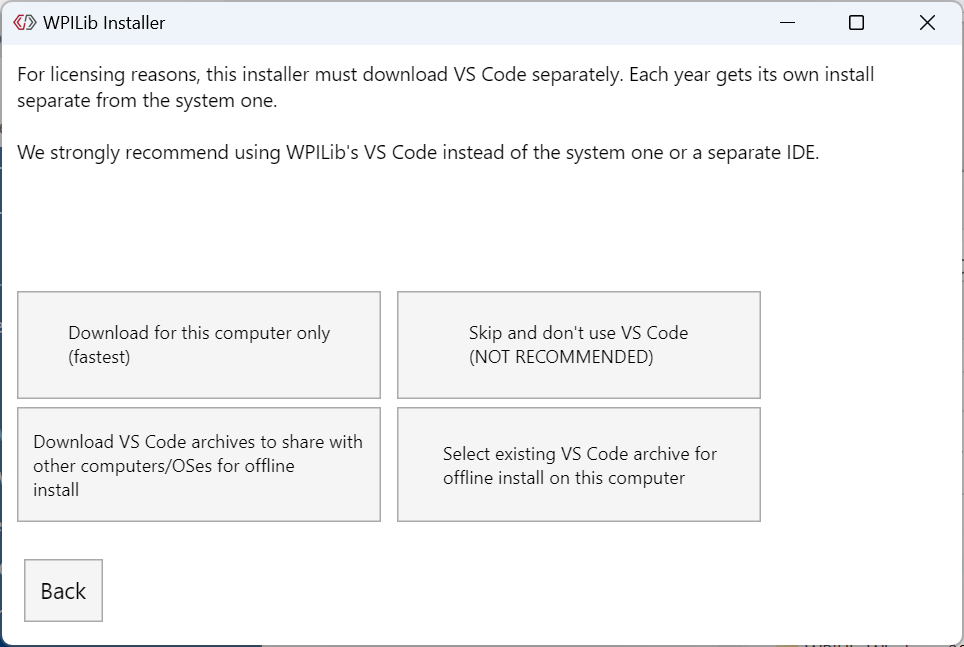
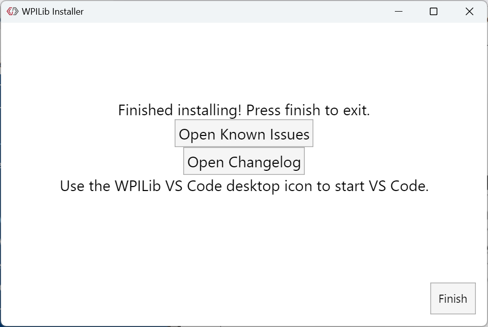

Sign in
- 1Open your phone's camera
- 2Point it at the code
- 3Tap the link and fill in the form
No phone? Tell a mentor and we'll sign you in.
How
Computers
Think
From a switch to a robot
Where are the computers in this room?
We'll climb from a single switch to a robot
Each section adds one rung. By the end, you'll know what really happens when you press Deploy.
What's inside a computer
From a room
to your pocket
(click ENIAC or Apollo to see the real one)
Every computer does three things
Input
Keyboard, mouse, touchscreen
Robot: joysticks, sensors
Process
The CPU follows instructions and makes decisions
Output
Screen, speakers
Robot: motors, lights
Four parts work together like a kitchen
CPU
Does the work, one step at a time, billions of steps per second.
Memory (RAM)
Holds what you're working on right now. Fast, but small.
Storage
Keeps everything, even when the power is off.
Input / Output
Orders come in, finished dishes go out.
Memory forgets. Storage remembers.
RAM
- Super fast
- Smaller (8 to 16 GB in a laptop)
- Erased when the power goes off
Storage
- Slower
- Bigger (hundreds of GB)
- Keeps everything with the power off

A Raspberry Pi 5: a whole computer on one small board. Name the parts!
How we count (and how computers count)
Why do we count in tens?
The Babylonians counted in sixties
Count to 60 on your hands, Babylonian style
Your thumb taps the 12 finger segments on one hand. Each time you reach 12, raise one finger on the other hand. 12 × 5 = 60. (A popular theory for why they picked 60.)
taps
Number systems are a human choice
The Maya: base 20
Fingers and toes. Twenty was their "ten."
French: 80 = "four twenties"
In French, 80 is quatre-vingts, a leftover from counting in twenties.
Dozens: base 12
12 eggs, 12 months, 12 hours on a clock face, 12 inches in a foot.
Meet the Zibbits
from planet Duo. One finger per hand.
| Zibbit writes | It means |
|---|---|
| 0 | zero |
| 1 | one (out of fingers!) |
| 10 | two (start a new column) |
| 11 | three |
| 100 | four |
Computers
are Zibbits
A switch has only two states, so computers count in base 2: binary.
"There are 10 kinds of people: those who understand binary and those who don't."
In binary, each place is worth double the last
Same idea as decimal. Only two digits: 0 and 1.
Four switches can count from 0 to 15
Click any bulb to flip it. Notice the rightmost bulb flips every time, like an odometer.
Count in binary on one hand
Each finger is a bit
- Show 5
- Show 10
- Show 21
- Show 31 (all up!)
One hand counts to 31. Two hands reach 1,023.
Add up the places that are on
So the Zibbit who was 1111 years old? 8 + 4 + 2 + 1 = 15.
Our team number in binary
Take the biggest place that fits, subtract, repeat.
Binary addition has just four rules
Right to left, carry when you hit 10. Same as decimal, just sooner.
Your turn: pen and paper first, then check
Binary → decimal
- 101 = 5
- 1111 = 15
- 10010 = 18
- 11110101 = 245
Decimal → binary
- 7 = 111
- 12 = 1100
- 20 = 10100
- Your age
Add
- 0011 + 0001 = 0100
- 0101 + 0011 = 1000
- 0110 + 0111 = 1101
- 1111 + 0001 = 10000 ⚠
8 bits make a byte
1 bit
One switch: 0 or 1
1 byte = 8 bits
256 combinations: 0 to 255. Enough for one letter or one number up to 255.
The level that broke the game
In Pac-Man, the level number was stored in one byte. A byte maxes out at 255.
Switches that make decisions
→ 1937An idea waiting 80 years
The logic teacher and the student
George Boole
A mostly self-taught English math teacher invents a math of just TRUE and FALSE. No computers exist. People think it's a curiosity.
Claude Shannon
A 21-year-old student at MIT realizes electrical switches can do Boole's logic. His master's thesis becomes the blueprint for digital computers.
A switch flipped by electricity: tubes, then transistors
Vacuum tube

Changing a burned-out tube in ENIACFinding one bad tube among about 18,000 was a real job.Photo: public domain, via Wikimedia Commons">Glass, hot, thumb-sized, burned out often. ENIAC needed about 18,000.
Transistor

TransistorsEach one is a switch with no moving parts. Chips pack billions of much tinier ones.Photo: Pxchanh, CC0, via Wikimedia Commons">No glass, no heat-up, no moving parts. A modern chip has billions.
Three basic gates make every decision a computer can make
Add a NOT and you get even more gates
The robot makes these decisions 50 times a second
enabled && triggerlimitSwitch || eStop!intakeFullSneak peek: that right column is real Java. You'll write it next time.
Two gates can add two bits
- XOR ("exclusive or"): ON when exactly one input is ON → the sum bit
- AND: ON when both are ON → the carry bit
Turn both on: 1 + 1 = 10. This circuit does exactly what you just did on paper.
A CPU is a very well-organized pile of switches
Nothing magic. Just switches, built into gates, built into bigger and bigger pieces.
Be a half adder: 4 people add two bits
The rules
- A, B: hand up = 1, hand down = 0. Mentor tells you which.
- XOR: hand up if exactly one of A, B has a hand up.
- AND: hand up only if both have a hand up.
- Read the answer: AND then XOR, left to right.
| Round | A | B | AND carry | XOR sum | Answer |
|---|---|---|---|---|---|
| 1 | 0 | 0 | 0 | 0 | 00 = 0 |
| 2 | 1 | 0 | 0 | 1 | 01 = 1 |
| 3 | 0 | 1 | 0 | 1 | 01 = 1 |
| 4 | 1 | 1 | 1 | 0 | 10 = 2 ✓ |
Everything is numbers
Messages made of two symbols
Every letter is secretly a number
When you type a message, your phone is really sending numbers. Emoji don't fit in ASCII's 128 spots, so they come from Unicode, a much bigger table that starts with ASCII.
Zoom in far enough and a picture is just numbers
A picture is a grid of tiny squares called pixels.
Each pixel is three numbers: how much red, green and blue (0 to 255).
= AdamBots Gold. Hover over the picture to read any pixel.
Sound and sensor readings are numbers too
Sound is measured thousands of times a second. Each dot is one number.
On our robot
A limit switch is a single bit: pressed or not.
The real world is smooth. Computers count in steps.
Analog
Smooth, any value in between. Like a ramp, a dimmer knob, or the hands on a clock.
Digital
Exact steps, stored as numbers. Like stairs, a light switch, or a digital clock. Copies perfectly, ignores noise.
Decode the secret message (real ASCII!)
01000010 01001111 01010100 01010011
Each group of 8 bits is one character. Convert to decimal with 128-64-32-16-8-4-2-1, then look it up. Each row is one word.
Programs: recipes for computers
1843Holes, looms and a visionary
The loom and the first programmer
Computers do exactly what you say, not what you mean
What it actually needed
1. Open the bread bag. 2. Take out one slice. 3. Unscrew the jar lid. 4. Pick up the knife. 5. Scoop peanut butter…
Write an autonomous routine: grab the ball, score it
if / else lets a program make decisions
if (pathClear()) { forward(); } else { turnLeft(); }
if (enabled && triggerHeld)Loops repeat code so you don't have to
Counted loop · "3 times"
repeat (3) { forward();}
Condition loop · "until blocked"
while (pathClear()) { forward();}
Level 2: the ball moves! Use if and loops to win
The CPU repeats three steps, billions of times a second
Program in memory
Register A
0Memory: total
?Clock ticks
0SystemCore's processor ticks about 2,400,000,000 times a second (2.4 GHz). This demo does about one.
The robot runs a loop every 20 milliseconds
- Read inputs: joysticks, sensors
- Decide: your code runs
- Set outputs: motors, lights
This is WPILib's standard robot loop. It ran at 20 ms on the roboRIO and still does on SystemCore. Teams can change it.
Loops shown since this slide opened (slowed way down): 0
Not all programs are apps
Operating systems
Run the whole computer and let other programs share it.
Windows, macOS, iOS, Android, LinuxApplications
What you open and use.
Games, browsers, SpotifyEmbedded
Hidden inside devices, doing one job.
Microwaves, cars, motor controllersWeb & cloud
Run on servers far away.
YouTube, Google DocsFrom power on to your program, in five steps
Speaking the computer's language
Grace Hopper and the nanosecond
Three ways to say "add 5 and 3"
10110000 00000101 00000100 00000011
MOV AL, 5 ADD AL, 3
int total = 5 + 3;
We write code for humans, then translate it
Readable
Teammates can understand and fix your code.
Portable
The same code works on many kinds of computers.
Safer
The language catches many mistakes for you.
A compiler translates your code into machine code
Compiled
Like translating a whole book before anyone reads it. Fast to run. (Java, C++)
Interpreted
Like a live interpreter translating while you speak. Easy to try things. (Python)
Java's first name was Oak
From your laptop to a moving robot
(WPILib)
into bytecode
over its network
on the robot runs it
iload_1 // get a iload_2 // get b iadd // add them istore_3 // save total
Two kinds of mistakes
Syntax error
Like a spelling or grammar mistake.
Logic error
The code runs, but does the wrong thing.
1999Two famous bugs
A moth and a lost Mars probe
Three things to remember
Computers are billions of switches.
Binary and gates turn switches into numbers and decisions.
Compilers turn our words into those switches.
How much do you remember?
1 · What is 1010 in decimal?
2 · Why are there 60 minutes in an hour?
3 · Which gate lights only when both inputs are ON?
4 · What does a compiler do?
Intro to
Java
Next time, you write your first program.
Install WPILib on your laptop
It comes with its own VS Code, set up for robot code. Don't download VS Code on its own.
- Windows 11
…Windows-x64…iso - Mac, Apple chip (M1, M2…)
…macOS-Arm64…dmg - Mac, Intel chip
…macOS-Intel…dmg
Which Mac? Apple menu → About This Mac → Chip.
Installer screens: WPILib docs (docs.wpilib.org), CC BY 4.0. They show an earlier version; yours will say 2027. Click one to zoom.
Windows: right-click the .iso → Mount → open WPILibInstaller.exe. Mac: open the .dmg → WPILibInstaller.

1
2
3
43Done! Open the WPILib VS Code 2027 icon. That's the one we use next session.